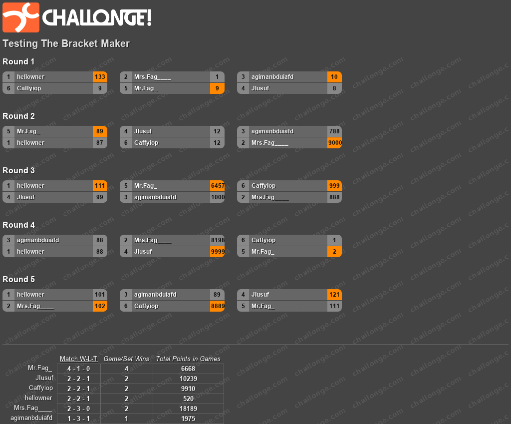
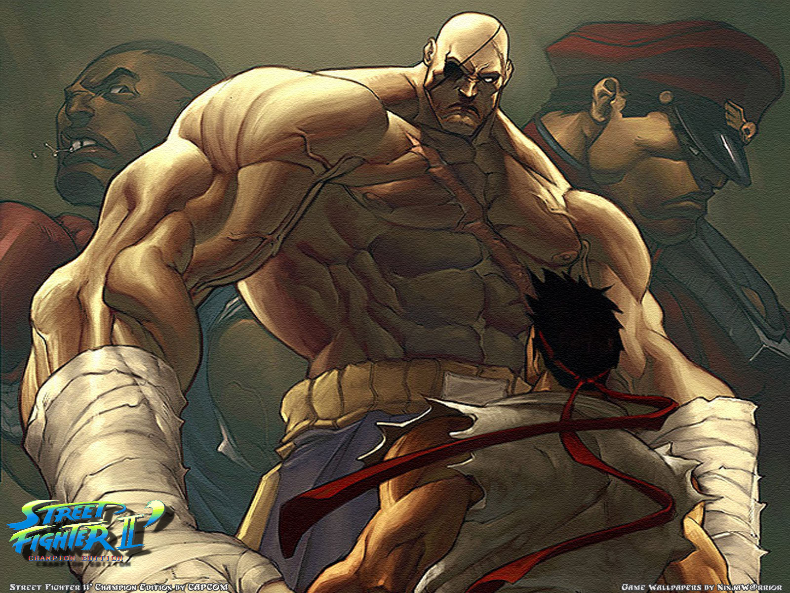
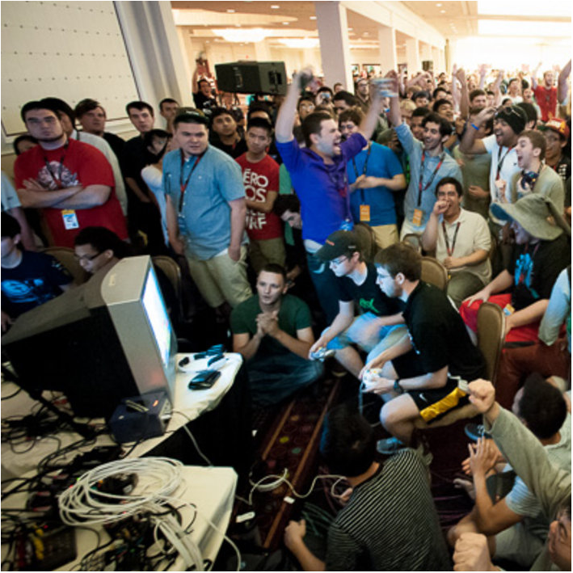

Do more with your tournaments
Whether your a Tournament Organizer or entering a Tournament that the choice for bracket information is Challonge.com. Many of today's tournaments use Challonge.com auto generated tournament brackets to assist in managing participants but what happens to those brackets when the finals are over and everyone has left. Probably Nothing!.

Maximize your tournaments
GamerChartsTT.com allows Tournament hosts to add their tournament brackets to our database and assist gamers with information which has up to now has never been available. Players can build W/L Ratios, Tournament Stats and recognize rivals. Maximize your tournament commentary with up to date information on players.

Hosts are welcomed
Honestly this endeavour will not be possible without community participation. Each tournament loaded into our database allows us to generate more data. GamerChartsTT.com does this at no cost to both gamers or host and we ask that those that wish to see this vision prosper contribute to keeping this site alive and up to date. In the end this is service for the gaming community, powered by the gaming community.
 Username: Password:
Username: Password: